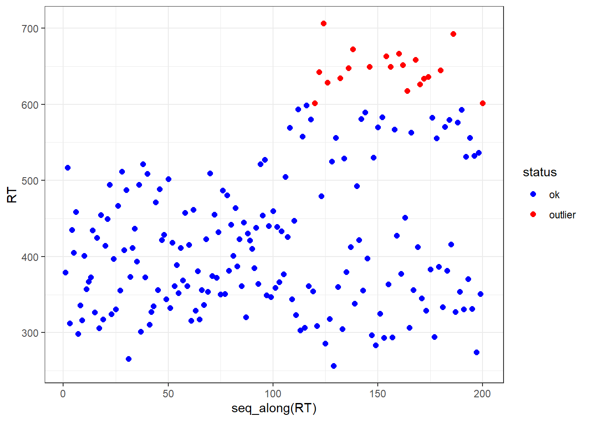
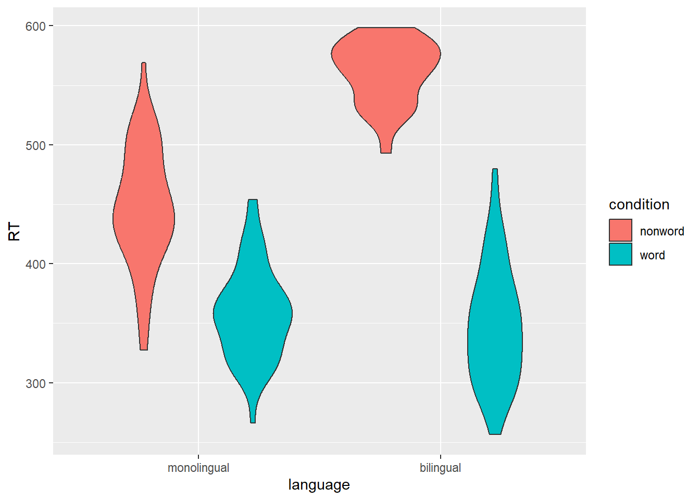

Show me how
# In the top-right where it says "Project: (None)" use the dropdown to do "New Project", and follow the promptsIn this section we do some exercises to practice. Each exercise has a solution that is hidden to start with: you can click on the Show me how button to reveal the solution, but I recommend that you try to solve each exercise yourself before looking at the solution. In each exercise I give some tips and some references to material in Hadley Wickham’s book – reading this material should help you identify, and understand, functions that you need to solve the exercise.
Whenever you start a piece of work in R, make a folder specially for that piece of work, and start an Rproject in that folder.
# In the top-right where it says "Project: (None)" use the dropdown to do "New Project", and follow the promptsUse the following link to download the data as a spreadsheet: ldt_data.csv. Then move the spreadsheet into your project folder so R can see it.
tidyverse loaded.Remember to load the tidyverse library at the start of each project.
library() does this.library(tidyverse)Now read the data into R.
read_csv()` does this.?read_csv() - including that question mark at the beginning - to access R’s in-built help system for the read_csv() function. This works for any function name.dat <- read_csv(file = "ldt_data.csv")Have a look at the data, by typing its name into the console.
dat# A tibble: 100 × 7
id age language rt_word rt_nonword acc_word acc_nonword
<chr> <dbl> <dbl> <dbl> <dbl> <dbl> <dbl>
1 S001 22 1 379. 517. 99 90
2 S002 33 1 312. 435. 94 82
3 S003 23 1 405. 459. 96 87
4 S004 28 1 298. 336. 92 76
5 S005 26 1 316. 401. 91 83
6 S006 29 1 357. 367. 96 78
7 S007 20 1 373. 435. 95 86
8 S008 30 1 327. 425. 91 80
9 S009 26 1 306. 455. 94 86
10 S010 22 1 317. 414. 94 88
# … with 90 more rowsWe want to keep these columns:
We want to remove the columns that code for accuracy
select()c(name, name, name, ...)# selecting columns positively
dat <- dat %>% select(c(id, age, language, rt_word, rt_nonword))# or eqivalently, selecting columns negatively
# notice the minus sign in front of c
dat <- dat %>% select(-c(acc_word, acc_nonword))Now that we only have RT in the data, let’s remove the “rt_” part of the column names, by changing the column names
rename()`::: {.callout-tip collapse=“true”} ## Show me how
# selecting columns positively
dat <- dat %>% rename(word = rt_word, nonword = rt_nonword)language be a factorAt the moment, language has two possible numeric values, 1 and 2. 1 means monolingual; 2 means bilingual. This variable is really a factor representing how many languages a person speaks, with two levels, ‘monolingual’ and ‘bilingual’. If a variable is naturally a factor, R confers advantages on us later in the analysis pipe-line if we transform it from numeric type to factor type. So let’s do that.
This is a bit tricky because you need to nest two function calls.
mutate()factor()factor() needs two arguments passed: levels and labelsdat <- dat %>%
mutate(
language = factor(
language,
levels=c(1,2), # what the possible numeric values are
labels=c('monolingual', 'bilingual') # what those numeric values really mean
)
)Reshape the data from “wide” (SPSS-style, with each condition’s data in its own column) to “long” (R-style, with a single column for the data itself, and additional coluns coding for condition / conditions)
pivot_longer()dat <- dat %>%
pivot_longer(
cols=c(word, nonword),
names_to="condition",
values_to = "RT"
)Outliers are very long reaction times. We want to remove those because they probably don’t give us information about the cognitive process we are trying to study (i.e., word recognition).
Let’s see what the RTs look like: Let’s say that RTs greater than 600 are outliers.

Since we say that RTs greater than 600 are outliers, let’s remove those.
filter()dat <- dat %>% filter(RT < 600)
# check the new maximum for RT
summary(dat) id age language condition
Length:180 Min. :18.00 monolingual:110 Length:180
Class :character 1st Qu.:24.00 bilingual : 70 Class :character
Mode :character Median :28.00 Mode :character
Mean :29.29
3rd Qu.:33.00
Max. :58.00
RT
Min. :256.3
1st Qu.:346.4
Median :395.1
Mean :411.2
3rd Qu.:462.1
Max. :598.4 Make a violin plot like this to show how the RTs vary across conditions.

ggplot()ggplot(dat, aes(y=RT, x=language, fill=condition)) +
geom_violin()
# See that the thing that takes longest is for bilinguals to identify non-words ...
# Might this be because they check in two languages to see if a word is legitimate,
# whereas monolinguals only check one language?We want a summary of the data, abstracting over individual participants to give the condition means.
At this point we have two variables each with 2 levels:
So we should have 2*2=4 cell means, like this:
| language | condition | meanRT |
|---|---|---|
| monolingual | nonword | 447.7275 |
| monolingual | word | 358.1143 |
| bilingual | nonword | 561.1946 |
| bilingual | word | 348.1346 |
group_by() and summarise()kable() gives a nice table layoutdat <- dat %>%
group_by(language, condition) %>%
summarise(meanRT = mean(RT))
knitr::kable(dat)| language | condition | meanRT |
|---|---|---|
| monolingual | nonword | 447.7275 |
| monolingual | word | 358.1143 |
| bilingual | nonword | 561.1946 |
| bilingual | word | 348.1346 |